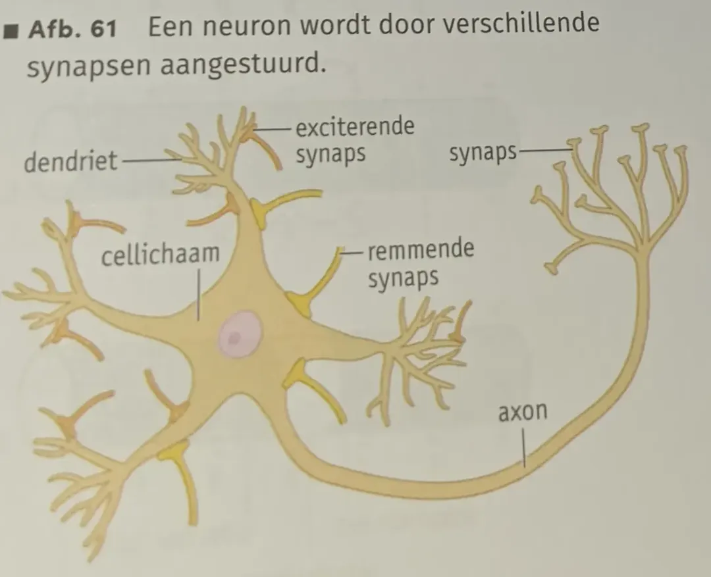
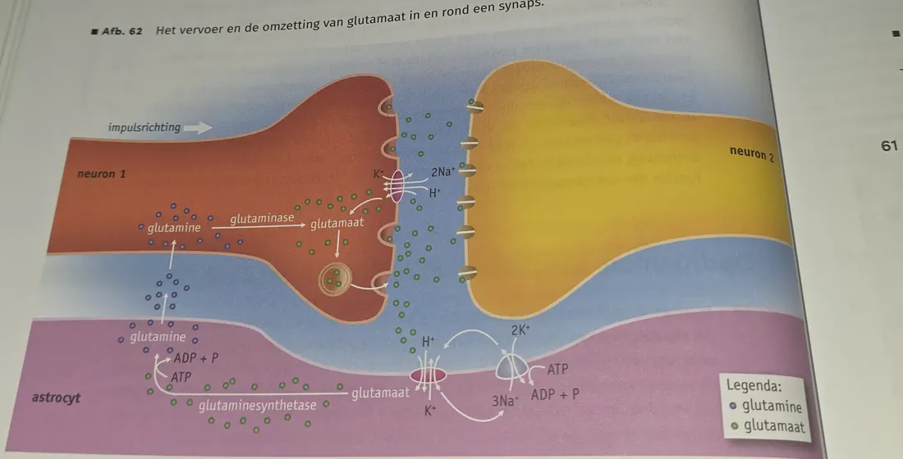
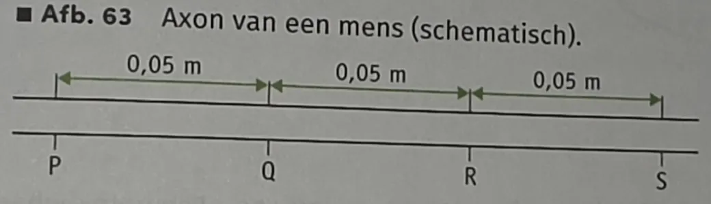
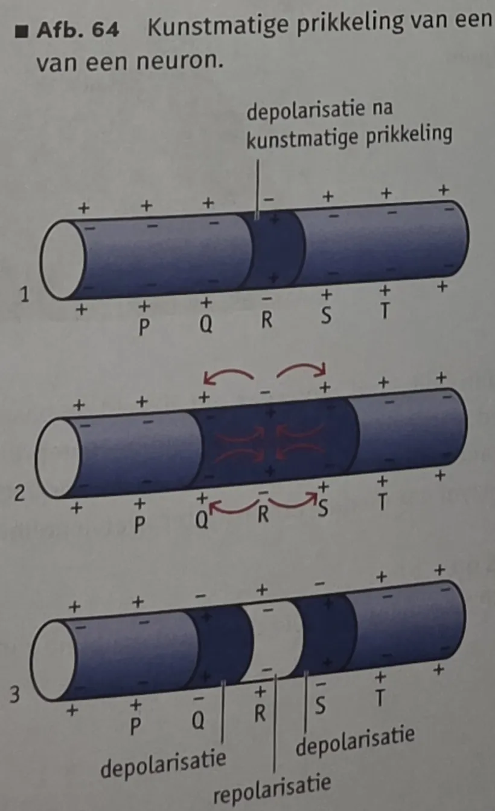
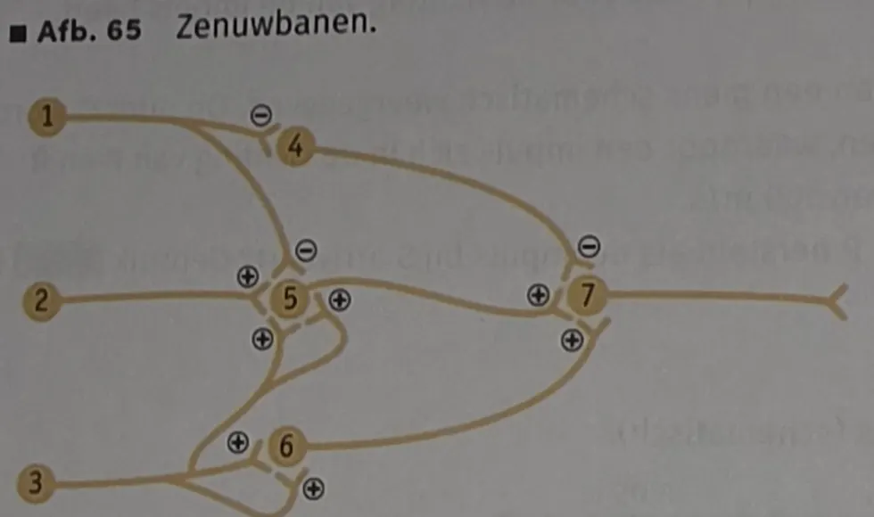

- 7.5.1 Je kunt beschrijven hoe impulsgeleiding plaatsvindt.
- 7.5.2 Je kunt beschrijven hoe impulsoverdracht plaatsvindt.
Rustpotentiaal
- Na⁺ en K⁺ vormen de basis voor impulsgeleiding (BiNaS 88D).
- Binnen (cytoplasma): veel K⁺ en negatief geladen grote moleculen (eiwitten).
- Buiten (intercellulaire ruimte): veel Na⁺ en Cl⁻.
- In rust: buitenkant membraan positief, binnenkant negatief. Dit spanningsverschil is bij alle neuronen ongeveer −70 mV = de rustpotentiaal.
- In stand gehouden door natrium-kaliumpompen (ionenpompen, BiNaS 88E): actief transport met energie uit ATP: Na⁺ de cel uit, K⁺ de cel in. Sommige ionen diffunderen via kanalen terug (passief transport), dus de pomp moet continu werken.
Actiepotentiaal
- Door een prikkel of door binding van neurotransmitters verandert de permeabiliteit van het membraan: ionkanalen gaan open (elk kanaal laat één specifiek ion door).
| Fase | Wat gebeurt er? | Potentiaal |
|---|---|---|
| 1 Rustfase | Na⁺- en K⁺-kanalen dicht | −70 mV |
| 2 Depolarisatie | Na⁺-kanalen open → Na⁺ stroomt de cel in → binnenkant minder negatief. Bij de drempelwaarde (≈ −50 mV) ontstaat een actiepotentiaal | tot ≈ +30 mV (± 1 ms) |
| 3 Repolarisatie | Na⁺-kanalen dicht, K⁺-kanalen open → K⁺ stroomt naar buiten → binnenkant weer negatief | terug naar −70 mV |
| 4 Hyperpolarisatie | K⁺-kanalen sluiten vertraagd → even lager dan −70 mV | < −70 mV |
| 5 Rustfase | Na-K-pomp herstelt de oorspronkelijke ionenverdeling | −70 mV |
- Refractaire periode (herstelfase): van het begin van de actiepotentiaal tot herstel van de rustpotentiaal kan dat stuk membraan (bijna) geen nieuwe impuls geleiden. Duurt ook ongeveer 1 ms. BiNaS 88F.
Impulssterkte en impulsfrequentie
- Alles-of-nietsprincipe: te zwakke prikkel → te weinig Na⁺-kanalen open → drempelwaarde niet gehaald → geen impuls. De kleinste prikkel die wél een impuls geeft = de prikkeldrempel.
- Impulssterkte = grootte van de spanningsverandering: voor alle neuronen gelijk.
- Impulsfrequentie = aantal impulsen per tijdseenheid (vaak per ms). Sterkere prikkel → hogere impulsfrequentie (hard geluid, brullende leeuw).
- In motorische neuronen: hogere impulsfrequentie → krachtiger spiersamentrekking of meer afgifte door klieren.
Geleiding langs de uitloper
Ongemyeliniseerde uitloper
- Op plaats P stromen Na⁺-ionen naar binnen → actiepotentiaal.
- De Na⁺-instroom depolariseert het aangrenzende membraan Q tot de drempelwaarde → ook daar gaan Na⁺-kanalen open.
- Ondertussen stromen bij P K⁺-ionen naar buiten → P repolariseert (herstelfase).
- Dit herhaalt zich steeds in het volgende stuk: de impuls verplaatst zich langs het membraan.
Sprongsgewijze impulsgeleiding
- Bij een axon met myelineschede kan de lading alleen veranderen bij de insnoeringen. De impuls 'springt' van insnoering naar insnoering.
- Tot wel 50× zo snel als zonder myelineschede.
Neurotransmitters en impulsoverdracht
- Een synaps bestaat uit een presynaptisch membraan (uiteinde axon), de synapsspleet en een postsynaptisch membraan (doelwitcel). BiNaS 88G.
- Zonder impuls: rustpotentiaal aan beide kanten.
- Impuls komt aan → neurotransmitters in de spleet → binden aan receptoreiwitten op ionkanalen → ruimtelijke structuur verandert → kanaal gaat open → ionen diffunderen de cel in.
- Neurotransmitters blijven heel kort: ze worden door enzymen afgebroken of door het presynaptische membraan opgenomen. Het effect duurt enkele milliseconden.
EPSP, IPSP en summatie
| EPSP | IPSP | |
|---|---|---|
| Naam | exciterend postsynaptisch potentiaal (exciteren = opwekken) | inhiberend postsynaptisch potentiaal (inhiberen = remmen) |
| Kanalen | Na⁺- en K⁺-kanalen open | K⁺- en/of Cl⁻-kanalen open; Na⁺-kanalen dicht |
| Effect | kleine depolarisatie | kleine hyperpolarisatie |
- Eén EPSP is niet genoeg om de drempelwaarde te halen.
- Komt uit meerdere axonuiteinden tegelijk of kort na elkaar neurotransmitter vrij, dan tellen de depolarisaties op: summatie. Zo kan de drempelwaarde wél worden gehaald.
- IPSP's kunnen het effect van EPSP's neutraliseren. Alleen als de som van alle EPSP's en IPSP's de drempelwaarde overschrijdt, ontstaat een actiepotentiaal.
Soorten neurotransmitters en stoffen
- Meer dan 50 verschillende neurotransmitters, vooral in de hersenen.
- Direct: receptoreiwit opent of sluit zelf een ionkanaal (snel).
- Indirect: via een second messenger (cascade) → trager en langer durend. Bijv. noradrenaline, dopamine, serotonine, histamine; rol bij gevoelens en slaap.
- Geneesmiddelen, genotsmiddelen en drugs beïnvloeden de impulsoverdracht door:
- aanmaak of afgifte van neurotransmitters te stimuleren of te remmen;
- afbraak of heropname te remmen (neurotransmitter blijft langer in de spleet);
- een neurotransmitter te imiteren (binden aan dezelfde receptor).
Zelftoets
Tik op een vraag voor het antwoord. Opdrachten 53–65 uit het boek.
Hoe groot is de rustpotentiaal en hoe wordt die in stand gehouden?
Ongeveer −70 mV. De natrium-kaliumpomp pompt met ATP Na⁺ de cel uit en K⁺ de cel in.
Wat gebeurt er bij depolarisatie en bij repolarisatie?
Depolarisatie: Na⁺-kanalen open, Na⁺ de cel in. Repolarisatie: Na⁺-kanalen dicht, K⁺-kanalen open, K⁺ de cel uit.
Wat is het verschil tussen een EPSP en een IPSP?
EPSP: kleine depolarisatie (opwekkend). IPSP: kleine hyperpolarisatie (remmend).
53a · Je balt je vuist. Verandert de impulssterkte in de motorische neuronen?
Nee. De impulssterkte is voor alle neuronen altijd gelijk (alles-of-nietsprincipe).
53b · Verandert de impulsfrequentie?
Ja, die wordt hoger. Een hogere impulsfrequentie geeft een krachtiger samentrekking van de spieren.
53c · Verandert de geleidingssnelheid?
Nee. De snelheid hangt af van het neuron zelf (bijv. myelineschede), niet van de prikkel.
53d · Je steekt in het donker een kaars aan. Impulsfrequentie in de oogzenuw hoger of lager?
Hoger: de prikkel (licht) wordt sterker.
54 · Kan op een plek die net begint te repolariseren een depolarisatie ontstaan?
Nee. Die plek zit in de refractaire periode: de Na⁺-kanalen zijn dicht en de normale ionenverdeling is nog niet hersteld.
55 · Waarom verloopt de impulsgeleiding bij MS veel langzamer?
Door de beschadigde myelineschede is er geen sprongsgewijze geleiding meer. De impuls moet over het hele membraan worden geleid (of lekt weg), en dat gaat veel langzamer.

56 · Wordt het neuron in afb. 61 geactiveerd als alle synapsen worden gestimuleerd?
Ja. Ik tel ongeveer 7 oranje axonuiteinden (EPSP's) en 4 gele (IPSP's): het verschil is groter dan 2, dus het neuron wordt geactiveerd. Tel zelf ook even na in de afbeelding hierboven.

57a · Is het deel van neuron 2 in afb. 62 het uiteinde van een axon of een dendriet?
Een dendriet: neuron 2 ontvangt de impuls (receptoren in het membraan); de impulsrichting is van neuron 1 naar neuron 2.
57b/c · Waar zitten de ionkanalen voor impulsgeleiding en waardoor openen/sluiten ze?
In het celmembraan van het axon van neuron 1. Ze openen en sluiten door een verandering van de membraanpotentiaal (depolarisatie).
57d/e · Waar zitten de ionkanalen voor impulsoverdracht en waardoor openen/sluiten ze?
In het postsynaptische membraan van neuron 2. Ze openen door binding van de neurotransmitter (glutamaat) aan de receptoreiwitten en sluiten weer als die loslaat.
58 · Op welke twee manieren maakt de astrocyt de impulsoverdracht mogelijk?
1. Hij neemt glutamaat op uit de synapsspleet, zodat de receptoren weer vrij komen en een nieuwe impuls kan worden overgedragen. 2. Hij zet glutamaat om in glutamine en geeft dat aan neuron 1, dat er weer glutamaat (neurotransmitter) van maakt. (Ook herstelt hij de ionenverdeling met de Na-K-pomp.)
59a · Waarom gebruikt een neuron zonder impuls toch energie?
De natrium-kaliumpomp moet steeds met ATP Na⁺ naar buiten en K⁺ naar binnen pompen, omdat ionen terugdiffunderen. Zo blijft de rustpotentiaal bestaan.
59b · Actiepotentiaal en refractaire periode duren elk 2 ms. Maximale impulsfrequentie per seconde?
Eén impuls duurt 2 + 2 = 4 ms. 1000 / 4 = 250 impulsen per seconde.
59c · Welk gevolg heeft de refractaire periode voor de richting van de impuls?
Het stuk membraan waar de impuls net was, zit in de refractaire periode en kan niet opnieuw depolariseren. De impuls kan dus niet terug en gaat maar één kant op.

60 · Prikkel op Q, 100 m/s. Is de rustpotentiaal op P hersteld als de impuls bij S is?
Nee. Q → S = 0,10 m → 0,10 / 100 = 1 ms. Q → P = 0,05 m → 0,5 ms. Als de impuls bij S is, is de actiepotentiaal op P pas 0,5 ms bezig. Actiepotentiaal + refractaire periode duren samen ongeveer 2 ms (BiNaS 88F), dus P is nog niet hersteld.

61a · Waarom kan de impuls bij kunstmatige prikkeling twee kanten op?
1. Aan beide kanten van de geprikkelde plek is het membraan nog in rust (niet refractair), dus beide kanten kunnen depolariseren. 2. De Na⁺-ionen die naar binnen stromen, verspreiden zich naar beide kanten en depolariseren het membraan aan beide kanten.
62 · Worden EPSP's effectiever of minder effectief door gelijktijdige IPSP's?
Minder effectief: IPSP's hyperpolariseren het membraan en neutraliseren (een deel van) de depolarisatie, dus wordt de drempelwaarde minder snel gehaald.

63 · Neuron 1, 2 en 3 worden tegelijk geactiveerd. Wordt neuron 7 geactiveerd?
Ja (lees de tekens in afb. 65 goed na). Neuron 4 krijgt van 1 alleen een ⊖ → niet actief. Neuron 6 krijgt van 3 twee ⊕ → actief. Neuron 5 krijgt ⊕ van 1, 2 en 6 en geen ⊖ (4 is niet actief) → actief. Neuron 7 krijgt ⊕ van 5 en 6 en geen ⊖ van 4 → verschil 2 → geactiveerd.
64 · Hoe kan botox rimpels laten verdwijnen?
Botuline voorkomt de afgifte van acetylcholine door motorische neuronen. Dan ontstaan er geen EPSP's/impulsen in de gelaatsspieren, dus die trekken niet meer samen en ontspannen. De huid wordt gladder.
65 · Hoe beïnvloeden organofosforverbindingen de EPSP's van acetylcholine?
Acetylcholinesterase wordt geremd, dus acetylcholine wordt niet afgebroken en blijft aan de receptoren binden. De EPSP's houden aan / ontstaan steeds opnieuw, waardoor spieren blijven samentrekken (krampen, verlamming).